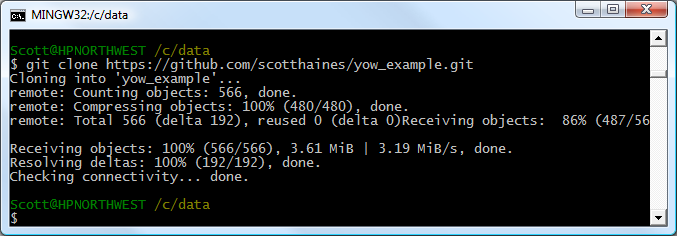
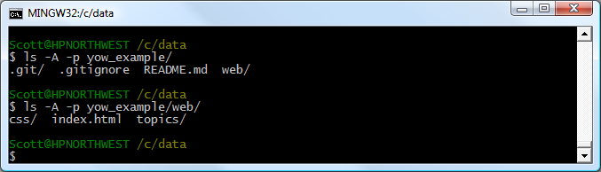

Download
To follow YOW Example you need to download, install and use three programs, and read YOW Example.
Downloads
- YOW Example
- With YOW Example you have three choices.
- Do not download YOW Example. Instead read YOW Example online. http://scotthaines.github.io/yow_example/
- Download a zip file of YOW Example's files and folders. This does not put
the repository on your computer.
- Press the Download ZIP button on the project's GitHub repository page. https://github.com/scotthaines/yow_example
- Open the zip file and copy the contents to your computer.
- Double click on the index.html file from Windows Explorer to view your local copy of YOW Example in your browser, i.e., Google Chrome, Internet Explorer, etc.
- Clone the YOW Example remote repository to your computer. Use the https
URL of the YOW Example repository and the Git Bash prompt of Git. (You have
to have already downloaded Git and installed Git.)
- The repositoryis ttps URL is
- https://github.com/scotthaines/yow_example.git
- Clone the repository with this command run in the Git Bash command prompt:
- git clone https://github.com/scotthaines/yow_example.git
- 
index.html is in the web folder.
- 
See http://git-scm.com/book/en/v2/Git-Basics-Working-with-Remotes for more about working with remote repositories from a command prompt. Instead of the command prompt YOW Example uses Tortoise Git to work with repositories through Windows Explorer. Tortoise Git is generally easier than using a command prompt.
- Amaya binary download
- http://www.w3.org/Amaya/User/BinDist.html
- Tortoise Git download
- https://code.google.com/p/tortoisegit/wiki/Download